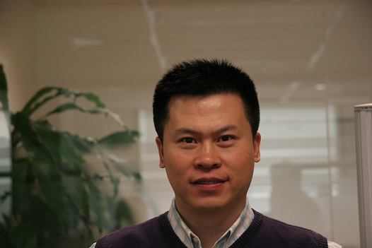

CloudFlow2012
First International Workshop on Workflow Models, Systems, Services and Applications in the Cloud
To be held in conjunction with the 26th IEEE International Parallel & Distributed Processing Symposium (IPDPS) 2012, Shanghai, China, May 21-25, 2012
Keynote
Scientific Workflows in Service and Cloud Computing Paradigm |
Cloud makes “Smart City” smarter |
|
|  | ||
Dr. Wei Tan |
Li Huang | |
Many disciplines including biology and biomedicine have adopted the service/cloud computing paradigms, and leveraging scientific workflows to orchestrate data-pipelines. Two US NIH sponsored initiatives, i.e., cancer Biomedical Informatics Grid (caBIG) and CardioVascular Research Grid (CVRG), have both adopted a service/cloud infrastructure that virtualizes the access of data and computational resources, and elastically scales out for more power. |
“Smart City” is a hot topic of investment and development for both Global and Chinese governments. It covers almost all aspects of urban infrastructure and life, and needs involvement from each department and bureau of the government. It helps to provide smart and better services and connections with citizens and enterprises. Cloud computing technology represents and embraces the latest advances in information technology, and can inject strong and new energy into “Smart City”. Good and proper use of Cloud can provide high quality service for “Smart City” with low cost, and really makes the “Smart City” smarter. iSoftStone is a leading IT service company in China and has gained rich case studies and experiences in building “Smart City” applications and services based on Cloud Computing technology. We would like to use this opportunity to share our experience in this field and also look forward to hearing constructive advice from the audience. |
|
Dr. Wei Tan received the B.S. degree and the Ph.D. degree from Department of Automation, Tsinghua University, China in 2002 and 2008, respectively. He is currently a research staff member in IBM T. J. Watson Research Center, USA. From 2008 to 2010 he was a researcher at Computation Institute, University of Chicago and Argonne National Laboratory, USA. His research interests include service-oriented architecture, business and scientific workflows, Petri nets, data centric computing and cloud computing. He has published over 30 journal and conference papers. He is an associate editor of IEEE Transactions on Automation Science and Engineering. He served in program committee of many conferences and co-chaired two workshops. Contact him at wtan@us.ibm.com. |
Li has 20 years of IT and Telecom industry experience spanning from solution sales, pre-sales, business development, marketing to R&D. Currently, Li is the Senior VP of iSoftStone and COO of Great China business group. He is also responsible for Cloud service line in iSoftStone. Before iSoftstone, Li was the Senior VP and GCR country manager of Symbio group and Senior Director of Solution Team Unit of Microsoft GCR. Li also led Motorola Nanjing global software R&D center and held new business development director, system integration executive manager, project manager and system engineer positions at Motorola and Siemens in his early professional days. |